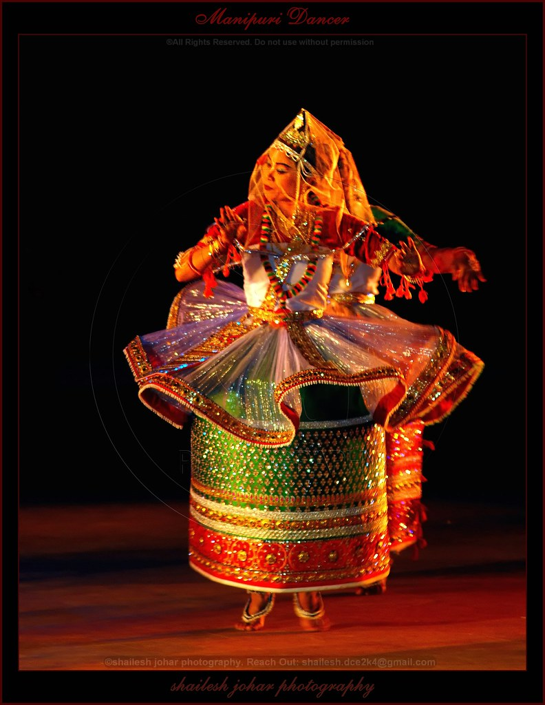

Manipuri dance is counted among major classical dance forms of India, especially noted for themes based on Vaishnavism and spectacular execution of ‘Ras Lila’, dance dramas based on love between Radha and Krishna. Other themes included in this art form associate with Shaktism, Shaivism and on the sylvan deities called Umang Lai during Manipuri festival ‘Lai Haraoba’. This dance form is named after the north-eastern state of Manipur, India from where it originated but it has its roots in ‘Natya Shastra’, the age-old Sanskrit Hindu text. A mix of Indian and southeast Asian culture is palpable in this form. The age-old dance tradition of the place is manifested from great Indian epics, ‘Ramayana’ and ‘Mahabharata’, where the native dance experts of Manipur are referred as ‘Gandharvas’. The Manipuris perform this religious art that aims at expressing spiritual values during Hindu festivals and other important cultural occasions like marriage.
Traditionally the Manipuri people consider themselves to be the ‘Gandharvas’ mentioned in the Vedic texts who were singers, dancers and musicians associated with devas or the deities. Southeast Asian temples of early medieval period bear sculptures of ‘Gandharvas’ as dancers. The region is also mentioned as ‘Gandharva-desa’ in ancient Manipuri texts. Usha, the exalted dawn goddess in the ‘Rig Veda’ is traditionally accredited of creating female dance art and tutoring girls in the art. Conventionally this oral tradition of dance passed down verbally to women is famous in Manipur as ‘Chingkheirol’. Manipur finds place in age-old Sanskrit texts including the great Indian epic, the ‘Mahabharata’, which mentions that one of the five Pandava brothers, Arjun met Chitrangada and fell in love with her in this beautiful valley. The ethnic majority of Meitei people call dance as ‘Jagoi’ and the traditional ‘Lai Haraoba’ festival observed in honour of the sylvan deities called Umang Lai includes several dance postures of Nataraja, an illustration of Lord Shiva as the cosmic ecstatic dancer, as also His disciple Tandu or Tangkhu. The ‘Khamba Thoibi’ dance is performed during ‘Lai Haraoba’. It is a duet dance of male and female partners that is dedicated to the sylvan deity, Thangjing of Moiran, and associated with the Manipuri folklore of two lovers an orphan boy Khamba and a princess Thoibi, daughter of King Chinkhuba, from the epic ‘Moirang Parba’.
Manipuri dance, originating from the northeastern state of Manipur, is renowned for its graceful movements and devotional themes, particularly those depicting the love of Radha and Krishna. The costumes of Manipuri dance are elegant and play a crucial role in enhancing the fluidity and aesthetics of the performance. Male dancers typically wear a simple white or cream-colored dhoti, a fitted jacket or kurta, a decorative turban or headgear, and a waistbelt, along with minimal jewelry such as chains or bracelets. Female dancers, on the other hand, wear the distinctive **Potloi**, a stiff, cylindrical skirt often richly decorated with embroidery or zari work, paired with a fitted blouse called a choli and a transparent shawl known as innaphi draped over the shoulders.
|  | Manipuri Dance Form |